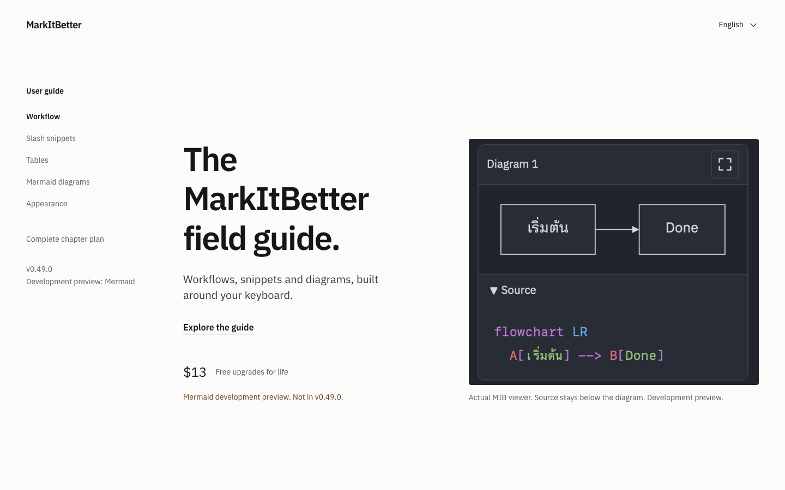
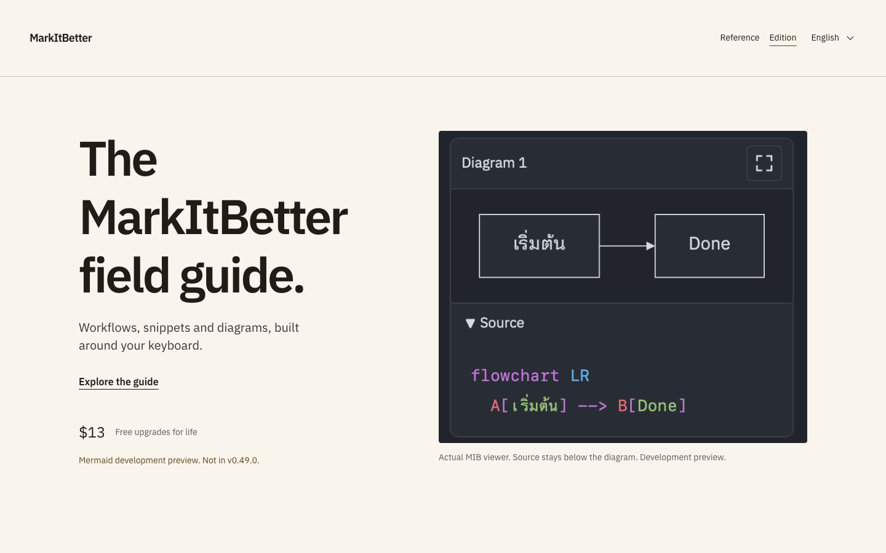

Reference
A chapter index stays in view. Compact reference sections make it easy to jump between a command, its source and the result.
Two restrained directions for a power-user guide. Both include English, Thai and Japanese editions, real Mermaid-viewer imagery, and working code examples.

A chapter index stays in view. Compact reference sections make it easy to jump between a command, its source and the result.

A more editorial handbook. Warm paper, generous chapter openings and a quieter single-column reading rhythm.
Fourteen chapters, including a major Mermaid chapter with nine topics. This is the style and contents review, before the complete guide is written.
Reference is the selected theme. The released guide targets v0.49.0; the completed Mermaid viewer is explicitly marked as a development preview. The full guide is still being written.